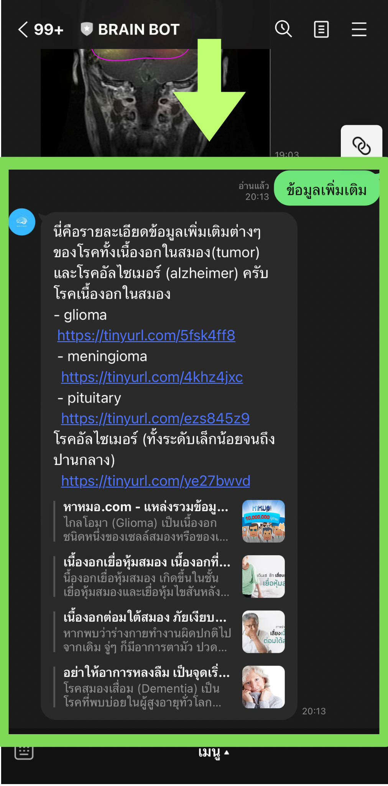
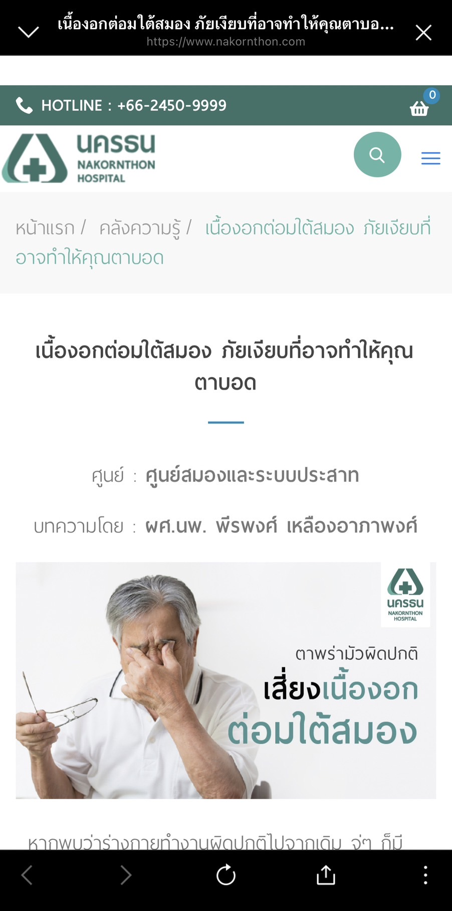
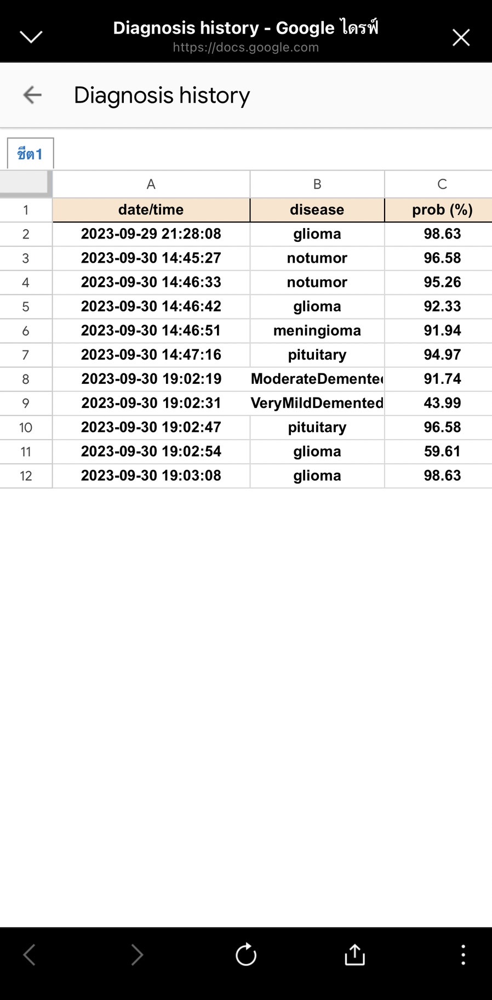
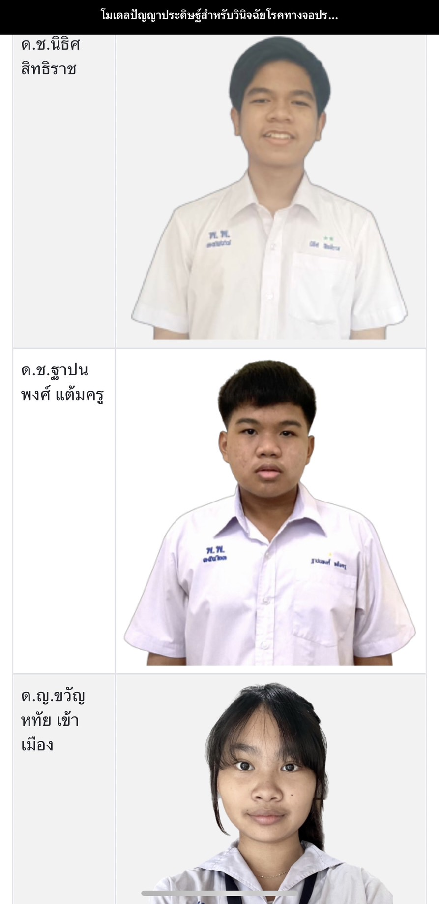

วิธีการใช้งานไลน์บอท
|
ขั้นตอนที่ 1
เลือกเมนูในการใช้งานว่าจะเลือกการตรวจโรคเป็นโหมดใด โดยจะมีทั้งหมด 2 โหมด คือ 1.tumor mode(ตรวจโรคเนื้องอกในสมอง) 2.alzheimer mode(ตรวจโรคอัลไซเมอร์) 
|
|
ขั้นตอนที่ 2
หลังจากเลือกโหมดแล้ว แชทบอทจะตอบกลับเป็น"ชื่อโหมด ready" ดังนี้ 1.tumor mode ready 2.alzheimer mode ready  
|
|
ขั้นตอนที่ 3
เมื่อแชทบอทตอบกลับมา แสดงว่าพร้อมสำหรับการใช้งานแล้ว ให้กดเลือกรูปสมองที่จะส่งแล้วกดส่งได้เลย  
|
|
ขั้นตอนที่ 4
เมื่อส่งรูปภาพไปแล้ว ตัวปัญญาประดิษฐ์จะใช้เวลาซักครู่ในการวินัจฉัยโรค แล้วจึงตอบกลับมาว่าเป็นโรคหรือไม่เป็นโรคหากเป็นโรคจะบอกว่าเป็นโรคอะไร พร้อมกับส่งรูปที่ทำการตรวจแล้วออกมา โดยตัวอย่างผลลัพธ์ เช่น 1.tumor mode " detect notumor" คือ โหมด tumor ไม่พบเนื้องอก 2.tumor mode "detect glioma" คือ โหมด tumor พบเนื้องอกชนิด glioma 3.alzheimer mode "detect NonDemented" คือ โหมด alzheimer ไม่พบโรคอัลไซเมอร์ 4.alzheimer mode "detect ModerateDemented" คือ โหมด alzheimer พบโรคอัลไซเมอร์ระดับกลาง    
|
ฟังก์ชั่นอื่นๆ
|
ข้อมูลเพิ่มเติม
เมื่อกดที่คำสั่ง "ข้อมูลเพิ่มเติม" ตัวแชทบอทก็จะตอบกลับมาเป็นข้อความประเภทโรคต่างๆพร้อมแนบลิ้งค์สำหรับให้ไปศึกษาข้อมูลเพิ่มเติมของโรคแต่ละประเภท ตัวอย่างดังภาพ 1.ภาพแชทบอทตอบกลับข้อมูลเพิ่มเติม 2.ตัวอย่างเว็บไซต์ข้อมูลเพิ่มเติมของโรค  |
|
ประวัติการวินิจฉัย
เมื่อกดที่คำสั่ง "ประวัติการวินิจฉัย" ตัวแชทบอทจะพาผู้ใช้งานไปยังเว็บไซต์ google sheet เพื่อดูประวัติการวินิจฉัยที่บันทึกไว้  |
|
ผู้จัดทำ
เมื่อกดที่คำสั่ง "ผู้จัดทำ" ตัวแชทบอทจะพาผู้ใช้งานไปยังเว็บไซต์แสดงชื่อและภาพของผู้จัดทำและอาจารย์ที่ปรึกษา  |